01
Mentorship
The Link Program
A mentorship program between graduate students and undergraduate students who are seeking support and advice from likeminded, politically conscious mentors in their respective fields.
0%
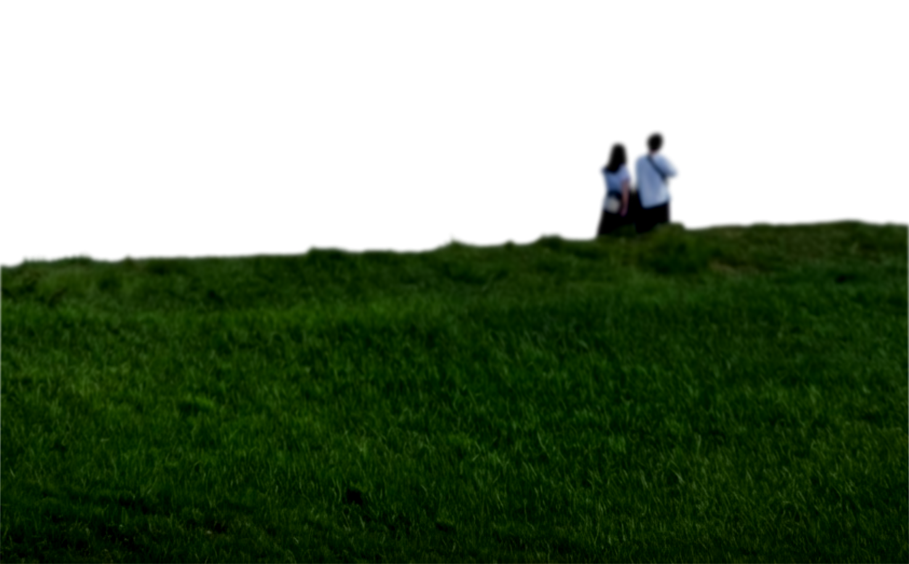
Scientists for Public Research
Scientists for Public Research is an undergraduate organization at the University of Maryland. We bring students together to discuss science policy, organize grassroots advocacy, and learn to communicate research to the public.
[02] Our impact
Four ways we show up
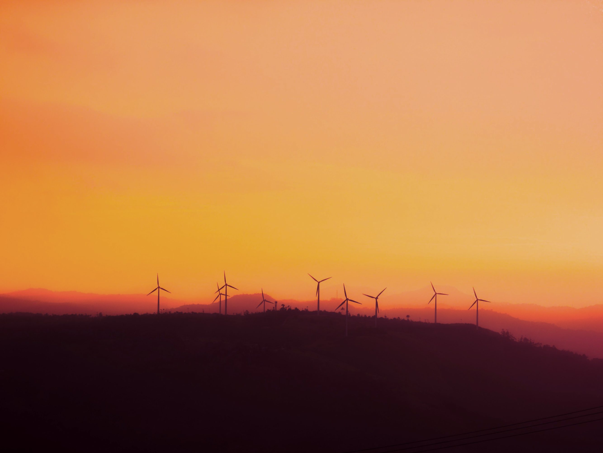
[03] Our mission
We believe good science is a public service—and should be for the betterment of all.
What we do
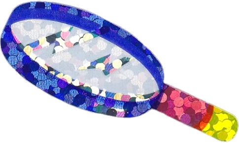
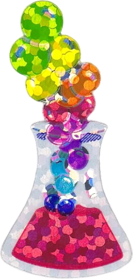
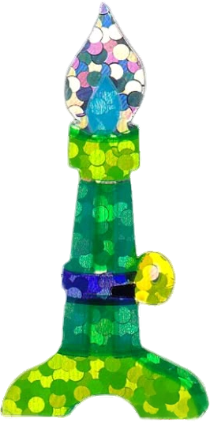
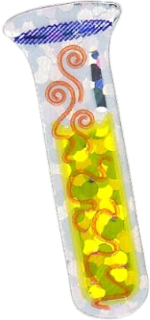
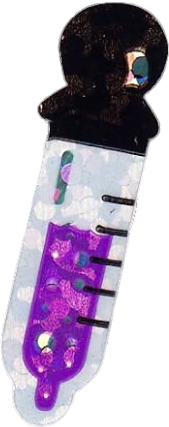
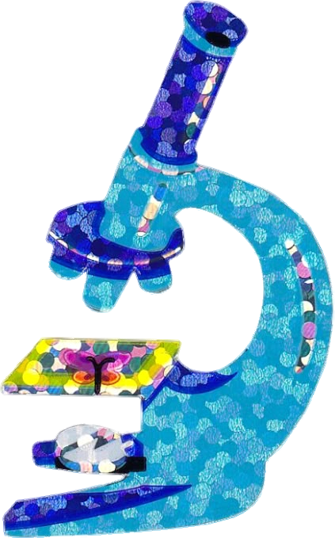
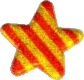
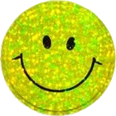
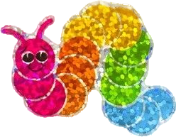
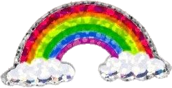
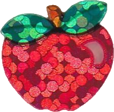
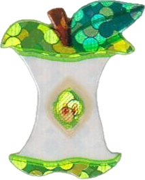
[04] as seen on Instagram
Recently at SPR
[05] Get involved
Come to our next
general body meeting
Bi-monthly GBMs with teach-ins on research and science policy, socials, guest speakers, and more!
About / Mission
Born of a political
climate that cast
science aside.
Our mission
Scientists for Public Research (SPR) is a student-led organization, established in 2025 by four students who envisioned a space dedicated to fostering political consciousness and literacy among budding scientists.
Since then, we have worked to build a community where undergraduate students can discuss science policy issues, participate in grassroots advocacy, connect with their peers across disciplines, and develop research communication skills.
Born of a political climate where world leaders cast aside values of open-mindedness, rigor, and objectivity in science, SPR is an incubator for the next generation of scientists who believe good science is a public service — and should be for the betterment of all.
Est. 2025
Founded by
four students.
Esther Fadaka
Founding member
Maya Hoffman
Founding member
Matthew Adjodha
Founding member
Sabrielle Jahangir
Founding member
Our 4 impacts
Four ways we show up.
01
Community-
Building
02
Grassroots
Advocacy
03
Science Policy
Education
04
Research Skills
Development
Meet the people behind SPR.
Meet the team →Our work / Initiatives
Tagline
tagline.
Guided by our 4 impacts
01
Mentorship
The Link Program
A mentorship program between graduate students and undergraduate students who are seeking support and advice from likeminded, politically conscious mentors in their respective fields.
02
Monthly
Journal Club
A forum for undergraduates to bond over shared research interests, learn about new and unfamiliar fields, and develop their science communication skills.
03
Showcase
Mini Conference
A low-stakes poster conference where undergraduates can showcase their own research alongside their peers and gain experience in communicating research findings.
04
Speaker series
Guest Speakers
An opportunity to hear from guest researchers from various fields, getting insight into cutting-edge research and a chance to build professional relationships. We seek to platform innovative, politically-conscious researchers to educate and inspire undergraduate students.
05
2–3 days
SciPol Hackathon
Guided by the SNAP SciPol Hackathon initiative! A simulated science policy problem for budding undergraduate researchers to solve over 2–3 days, competing with other students to come up with creative solutions.
06
Bi-monthly
General Body Meetings
A space for socials, guest speakers, teach-ins related to research + science policy, and more!
Want in? Come find
us at a GBM.
Members / 2025–26 board
Meet the team.
Students across neuroscience, public health, data science, environmental science, and more.
Events / Calendar
What's on.
Month Year
Embedded Google Calendar — styled to match (or iframe)
Up next
General Body Meeting
[ Date · Time ]
[ Room, Building ]
Monthly Journal Club
[ Date · Time ]
[ Room, Building ]
Guest Speaker Series
[ Date · Time ]
[ Room, Building ]
Get involved
Science is a
public service.
Join us.
01
Come to a GBM
Bi-monthly meetings with teach-ins, socials, and guest speakers.
See events →
02
Join a program
Sign up for the Link Program, Journal Club, Mini Conference, or the SciPol Hackathon.
View initiatives →
03
Follow along
Keep up with events and science policy news on Instagram.
@spr.umd →
Contact
Say hi.
Questions, collaboration ideas, or want to speak at a GBM? Send us a note and a coordinator will get back to you.
[ club email ]